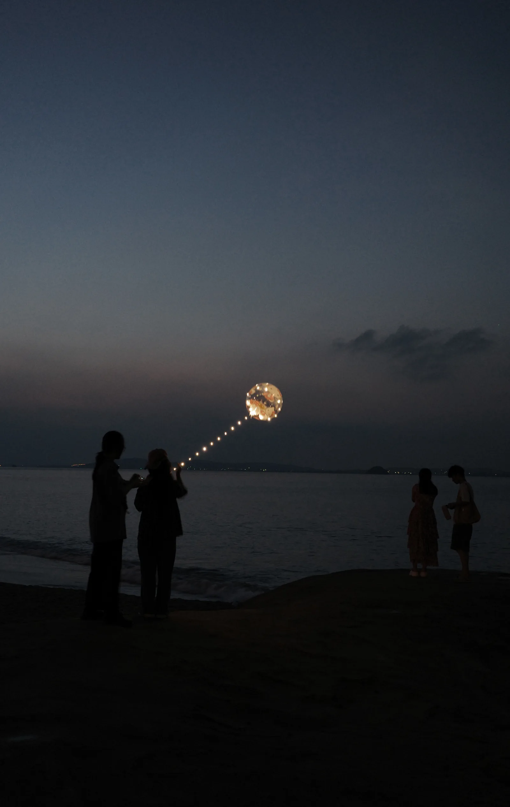
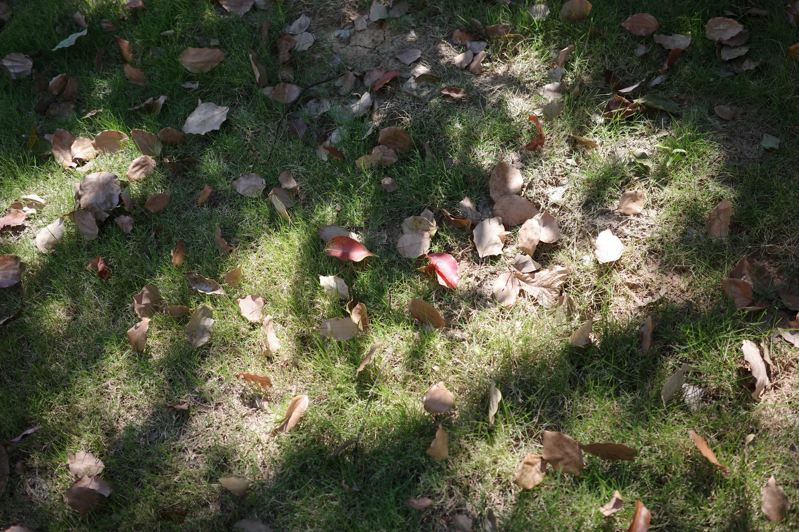
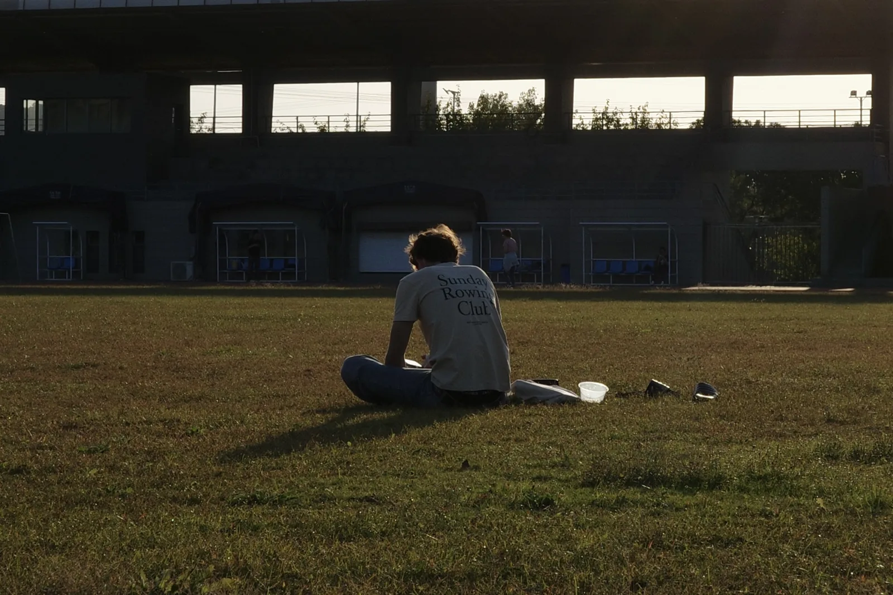
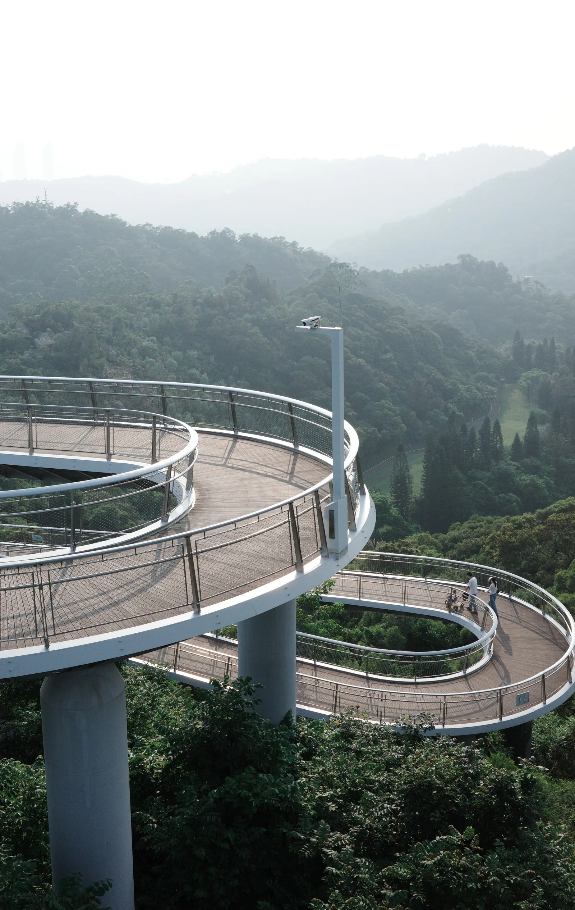
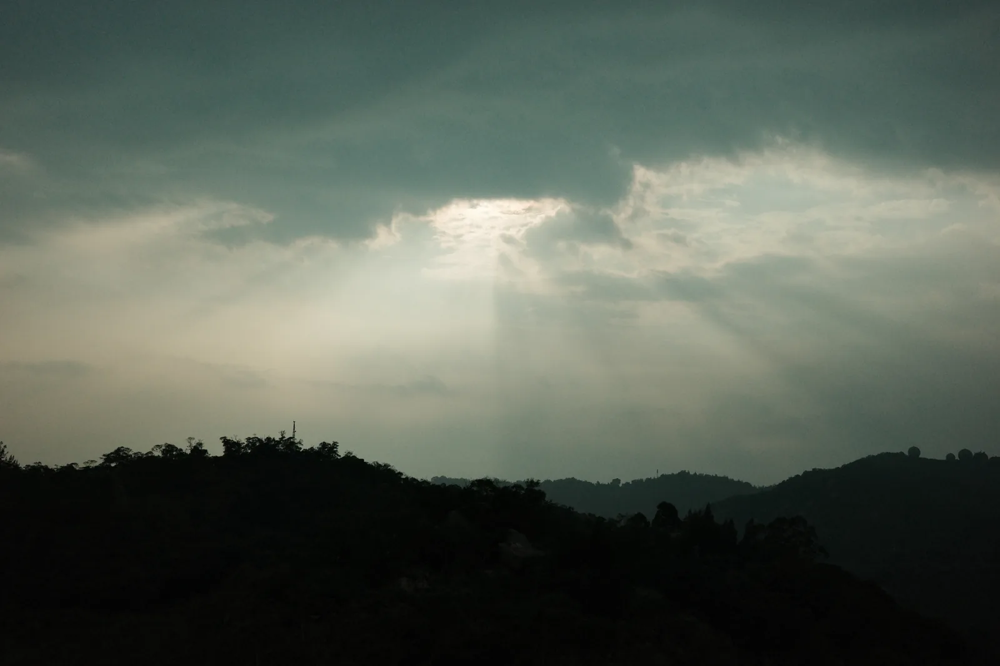
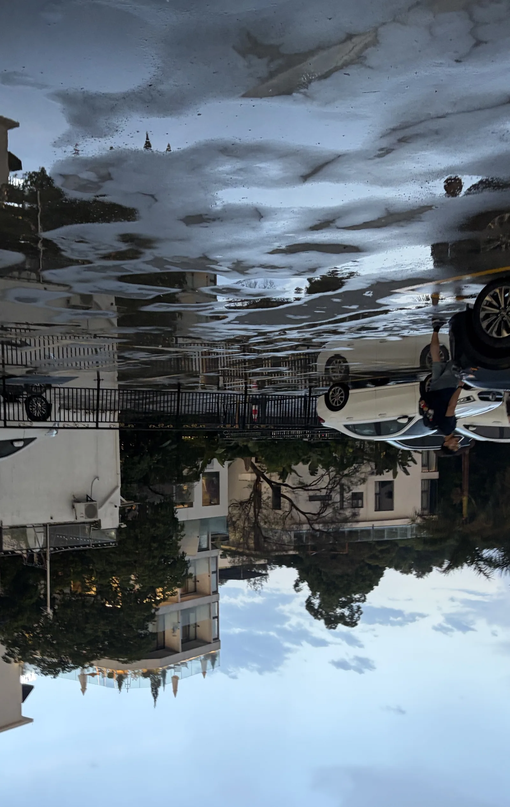
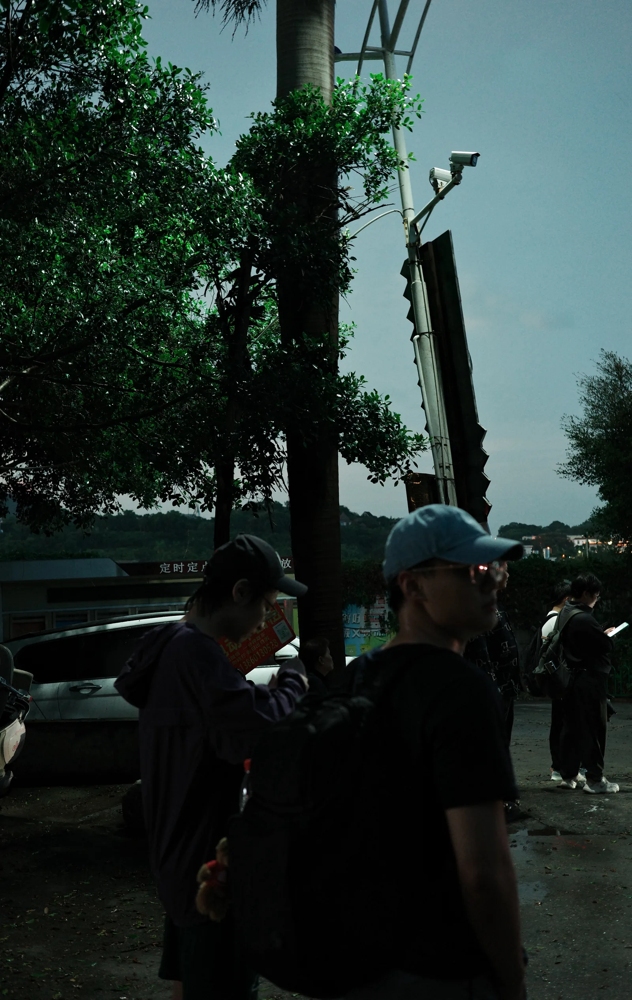
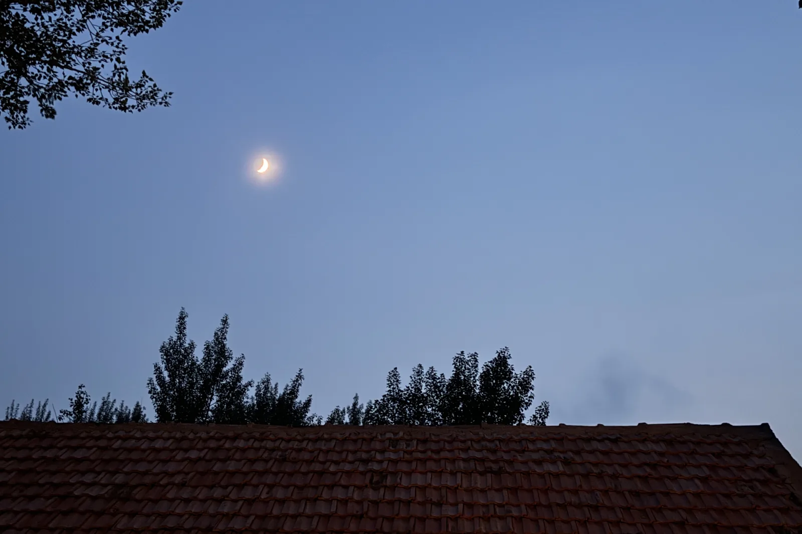
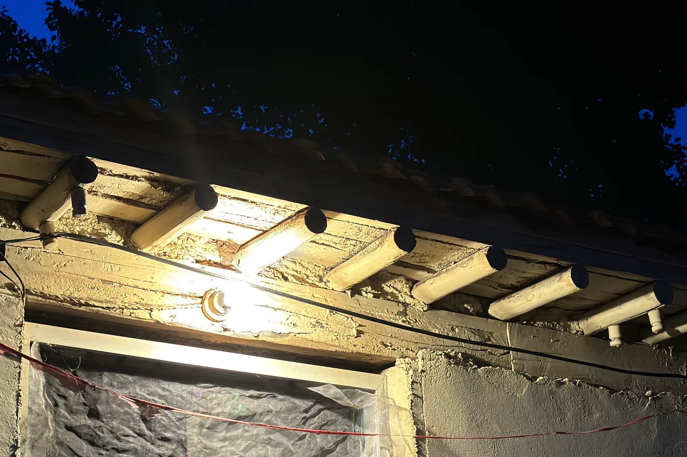

Photographs
A Little Longer
5 series · 21 photographs
Photographs
5 series · 21 photographs
Waiting for sunrise by the sea in Xiamen.

Photographed with a RICOH in warm sunlight.


A walk through changing weather.




父亲长大的地方，到了傍晚，院子里的灯照常亮起来。月亮已经挂上屋顶，手边的活还没做完。


Without color, light takes shape.